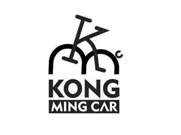

Trade Mark Journal No.2025/034 22 August 2025
UK00004208983 26 May 2025 (6,8,12)

- Class 6
- Bicycle locks; Bottles [metal containers] for compressed gas or liquid air; Containers of metal for compressed gas; Containers of metal for compressed gas or liquid air; Cylinders of metal for gas; Cylinders of metal for use with compressed gas; Gas bottles of metal; Gas storage tanks of metal; Metal bottles for compressed gas; Metal cylinders for compressed gas or liquids [empty]; Metal cylinders for compressed gas or liquids, sold empty; Metallic pressurised gas cylinders; Pressure gas bottles of metal; Pressure gas cylinders made of metal; Stands [structures] of metal for bicycles; Steel cylinders for compressed gas; Support stands [structures] of metal for bicycles.
- Class 8
- Adjustable spanners; Adjustable wrenches [hand tools]; Air pumps, hand-operated; Chucks for hand-operated tools; Cutting pliers [linemans' pliers]; Extension bars for hand tools; Hammers [hand tools]; Hand-operated wrenches; Hex keys; Hexagon keys; Pincers [hand tools]; Ratchet handles [hand-operated tools]; Ratchets [hand tools]; Screw drivers; Screwdrivers [hand tools]; Screwdrivers (Non-electric -); Socket sets [hand tools]; Socket spanners [hand-operated tools]; Socket wrenches [hand tools]; Spanners [hand tools]; Torque spanners [hand-operated]; Torque wrenches [hand-operated]; Tyre levers; Wire brushes [hand-operated tools]; Wrenches [hand tools].
- Class 12
- Adhesive rubber patches for repairing tubes or tires; Air pumps for bicycles; Bags for bicycles; Bicycle bells; Bicycle brake lever grips; Bicycle kickstands; Bicycle mudguards; Bicycle pedals; Bicycle pumps; Bicycle racks [carriers]; Bicycle saddle covers; Bicycle saddles; Bicycle seat posts; Bicycle stands; Handlebars for bicycles, cycles; Inner tubes for bicycle tires; Luggage racks for cycles; Panniers adapted for bicycles; Puncture repair outfits for bicycle tyres; Saddlebags adapted for bicycles; Tire inflators; Tire repair patches; Trailers; Tubeless tires for bicycles.
Menghong Trading Co., Ltd.
Representative: SMH BUSINESS CONSULTING LTD